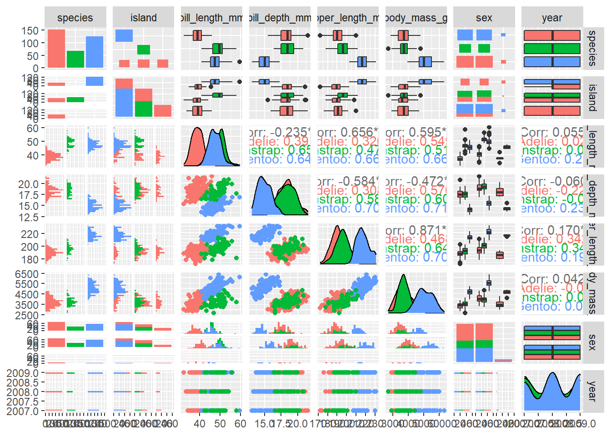

library(tidyverse)
library(palmerpenguins)
library(GGally)Palmerpenguins: Datos útiles para aprender con R
Si hay un conjunto de datos más utilizado por los científicos y analistas de datos mientras aprenden algo o enseñan a alguien, es iris (usuarios de R) o titanic (usuarios de Python).
El conjunto de datos del iris no se utiliza sólo porque sea fácilmente accesible. También es algo que puedes usar para demostrar muchos conceptos de ciencia de datos como correlación, regresión, clasificación. El objetivo de este post es presentarte el conjunto de datos de los pingüinos y ponerte en marcha con unos cuantos fragmentos de código para que puedas despegar tú mismo.
Muy recientemente, ha habido un sentimiento creciente en la comunidad para alejarse de iris debido al pasado eugenista de Ronald Fisher.
En este preciso momento, tenemos la suerte de contar con otro conjunto de datos similar al iris: pingüinos.
Carga de paquetes
Accediendo a los datos
#Visionado de los datos
glimpse(penguins)Rows: 344
Columns: 8
$ species <fct> Adelie, Adelie, Adelie, Adelie, Adelie, Adelie, Adel…
$ island <fct> Torgersen, Torgersen, Torgersen, Torgersen, Torgerse…
$ bill_length_mm <dbl> 39.1, 39.5, 40.3, NA, 36.7, 39.3, 38.9, 39.2, 34.1, …
$ bill_depth_mm <dbl> 18.7, 17.4, 18.0, NA, 19.3, 20.6, 17.8, 19.6, 18.1, …
$ flipper_length_mm <int> 181, 186, 195, NA, 193, 190, 181, 195, 193, 190, 186…
$ body_mass_g <int> 3750, 3800, 3250, NA, 3450, 3650, 3625, 4675, 3475, …
$ sex <fct> male, female, female, NA, female, male, female, male…
$ year <int> 2007, 2007, 2007, 2007, 2007, 2007, 2007, 2007, 2007…Definición de la columna de datos de penguins
species: una variable categórica (fct) denota la especie de pingüino (Adelie, Chinstrap y Gentoo)
island: una variable categórica (fct) que indica la isla en el archipiélago Palmer, Antártida (Biscoe, Dream o Torgersen)
bill_length_mm: número que indica la longitud del pico (milímetros)
bill_depth_mm: número que indica la profundidad del pico (milímetros)
flipper_length_mm: número entero que indica la longitud de la aleta (milímetros)
body_mass_g: número entero que indica la masa corporal (gramos)
sex: una variable categórica (fct) denota el sexo del pingüino (hembra, macho)
Cargar paquetes tidyverse, GGally y palmerpenguins
library(tidyverse)
library(GGally)
library(palmerpenguins)
library(skimr)Exploración del conjunto de datos
skim(penguins)| Name | penguins |
| Number of rows | 344 |
| Number of columns | 8 |
| _______________________ | |
| Column type frequency: | |
| factor | 3 |
| numeric | 5 |
| ________________________ | |
| Group variables | None |
Variable type: factor
| skim_variable | n_missing | complete_rate | ordered | n_unique | top_counts |
|---|---|---|---|---|---|
| species | 0 | 1.00 | FALSE | 3 | Ade: 152, Gen: 124, Chi: 68 |
| island | 0 | 1.00 | FALSE | 3 | Bis: 168, Dre: 124, Tor: 52 |
| sex | 11 | 0.97 | FALSE | 2 | mal: 168, fem: 165 |
Variable type: numeric
| skim_variable | n_missing | complete_rate | mean | sd | p0 | p25 | p50 | p75 | p100 | hist |
|---|---|---|---|---|---|---|---|---|---|---|
| bill_length_mm | 2 | 0.99 | 43.92 | 5.46 | 32.1 | 39.23 | 44.45 | 48.5 | 59.6 | ▃▇▇▆▁ |
| bill_depth_mm | 2 | 0.99 | 17.15 | 1.97 | 13.1 | 15.60 | 17.30 | 18.7 | 21.5 | ▅▅▇▇▂ |
| flipper_length_mm | 2 | 0.99 | 200.92 | 14.06 | 172.0 | 190.00 | 197.00 | 213.0 | 231.0 | ▂▇▃▅▂ |
| body_mass_g | 2 | 0.99 | 4201.75 | 801.95 | 2700.0 | 3550.00 | 4050.00 | 4750.0 | 6300.0 | ▃▇▆▃▂ |
| year | 0 | 1.00 | 2008.03 | 0.82 | 2007.0 | 2007.00 | 2008.00 | 2009.0 | 2009.0 | ▇▁▇▁▇ |
GGally, para evaluar las relaciones dentro del conjunto de datos
ggpairs(penguins, aes(color = species))